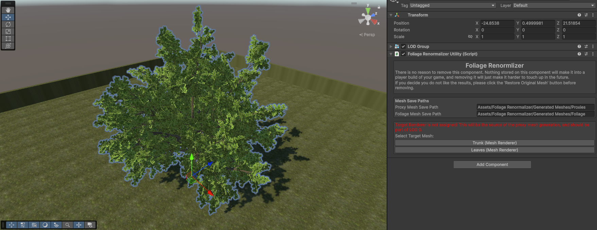
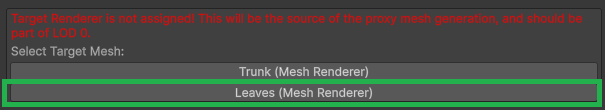
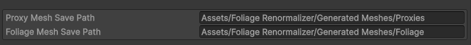
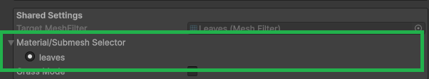
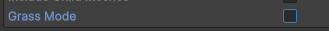

First Steps
Before you can renormalize anything, you need to add the Foliage Renormalizer Utility component to your foliage and configure a few shared settings. This page covers that initial setup; once it's done you'll move on to either Grass Mode or General Mode.
1. Add the Foliage Renormalizer Utility Component
Add the Foliage Renormalizer Utility component to your foliage GameObject. Where it goes depends on how your model is set up:
- Using LODs? Add it to the same GameObject as your LOD Group component.
- Separated model (e.g. a tree with separate trunk and leaf meshes)? Add it to the parent GameObject.
- Single mesh? Add it directly to the GameObject with your Mesh Renderer, then skip to step 3.

2. Set Your Target Renderer
Separated model and LOD group setups only.
Assign the Target Renderer. This should be the renderer with the actual leaves (not the trunk). If you are using LODs, it should also be LOD 0. This renderer is the source for proxy mesh generation.

3. Set Your Save Paths
Foliage Renormalizer writes the meshes it generates to disk as new assets. The Mesh Save Paths section controls where:
- Use Source Mesh Asset Path? — When enabled, generated meshes are saved next to your original source mesh. When disabled, you can set explicit paths below.
- Proxy Mesh Save Path — Where generated proxy meshes are written.
- Foliage Mesh Save Path — Where generated (renormalized) foliage meshes are written.

Note
These paths are stored in Editor Prefs and shared between all instances of the component in your project, so you only need to set them once.
4. Select Your Submeshes
Use the Material / Submesh Selector to choose which submeshes are included. In general, you'll want to exclude things like tree trunks and include the leaves.
The generated proxy mesh is only influenced by the submeshes selected here. If you exclude a submesh:
- It will not receive new normals.
- It will still receive AO in the vertex colors.

5. Separated Models & LODs: Proxy Stealers
If your foliage is split across multiple renderers (separate trunk/leaf meshes, or multiple LOD levels), each additional renderer needs a Proxy Stealer component so it can share the proxy mesh generated by this Utility.
See the dedicated Proxy Stealers guide for how to set these up. If your foliage is a single mesh, you can skip this.
6. Grass Mode or General Mode?
Finally, decide which workflow to use with the Grass Mode tickbox:

- If your foliage is grass (or a similar small detail, like clovers), enable Grass Mode and continue to the Grass Mode guide.
- Otherwise (trees, bushes, larger plants), leave it unchecked and continue to the General Mode guide.